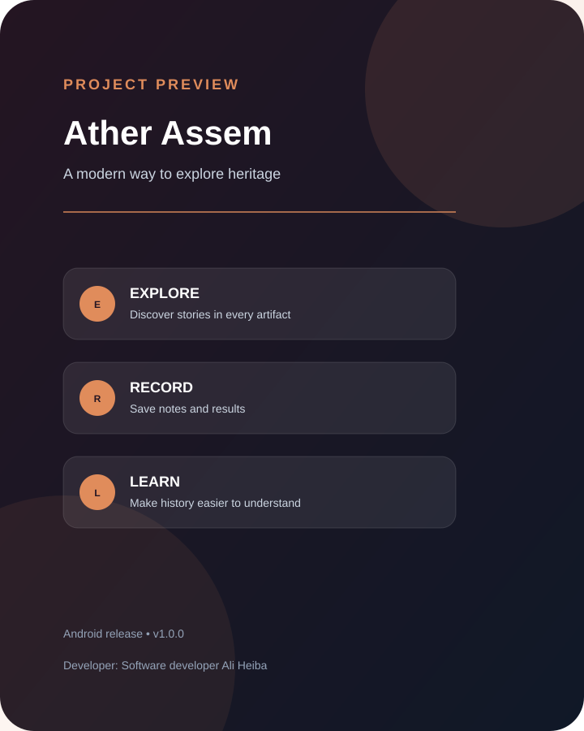
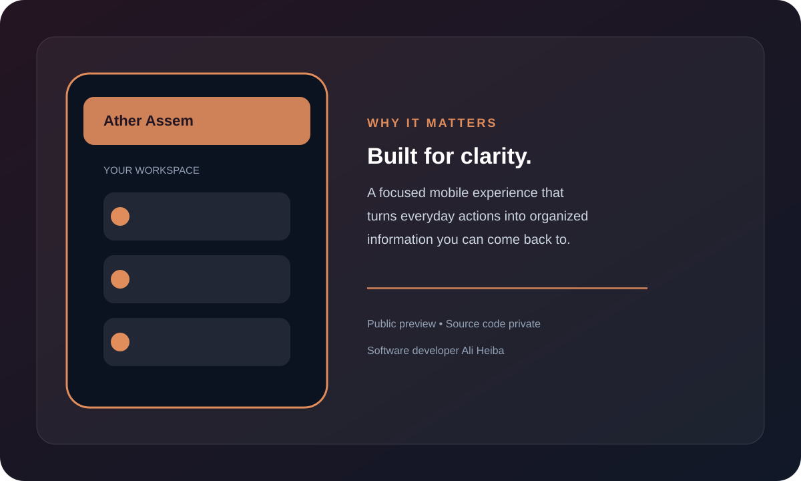

SMART HERITAGE EXPLORATION
التراث أقرب وأسهل في متناولك
تجربة عربية مبسطة لاستكشاف النقوش والقطع الأثرية، مع التركيز على الصورة، الفهم، وحفظ الملاحظات والنتائج بطريقة منظمة.
PUBLIC PREVIEWANDROID · v1.0.0SOURCE CODE PRIVATE

كيف يعمل المشروع؟
تجربة مركزة، واضحة، ومصممة لتقليل الخطوات غير الضرورية.
01
استكشف
تعامل مع التاريخ من خلال تجربة رقمية سهلة.
02
افهم
اعرض النتائج بلغة أبسط وأوضح للمستخدم.
03
تذكّر
ارجع إلى سجل الصور والنتائج في أي وقت.
معاينات مرئية
لقطات تعريفية تلخص الفكرة وتجربة الاستخدام.

هذه الصفحة والمحتوى المرئي مخصصان للتعريف بالمشروع. الأكواد المصدرية محفوظة في مستودع خاص، والمطور هو Software developer Ali Heiba.